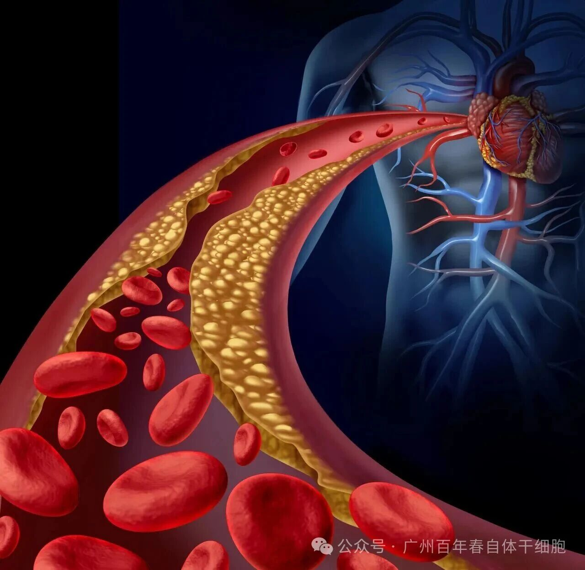
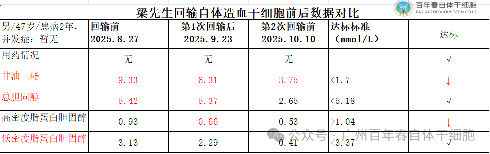

年后肝"负重"？百年春护肝美颜能量抗衰老针——给肝"松绑"，让脸发光！
2026-03-01

About Us
关于百年春

高血脂并非简单的血液指标异常，而是全身健康的“警报器”。长期高血脂会导致血管壁增厚、斑块形成，使血管逐渐狭窄甚至堵塞。心脏供血不足引发冠心病，脑血管堵塞导致脑中风，眼底血管病变可能致盲，肝脏脂肪堆积引发脂肪肝……这些严重后果，无一不与高血脂密切相关。更令人担忧的是，高血脂正逐渐年轻化，30-50岁人群的发病率逐年攀升，成为中青年健康的“第一杀手”。
传统治疗的局限：治标难治本

自体造血干细胞作用机制：
细胞分化与代替：
干细胞可分化为血管细胞、肝细胞等，替代受损组织细胞，恢复血管和肝脏功能，修复受损组织，增强脂质代谢能力，从而降低血液中的甘油三酯和低密度脂蛋白水平，改善脂质代谢；
细胞修复与再生：
自体造血干细胞促进血管细胞因子再生，重建造血功能；促进新陈代谢，增强组织供养能力，改善血液循环，减少脂质沉积；
抗炎与血管保护：
通过分泌生长因子，干细胞促进血管内皮细胞再生，减少炎症反应，改善血液循环，有效预防动脉粥样硬化斑块形成；
免疫调节：
自体造血干细胞是免疫源泉，可分化免疫细胞，调节免疫系统，减轻高血脂引发的慢性炎症，保护血管免受进一步损伤；
这些机制共同作用，不仅降低血脂，还显著减少心血管并发症风险，为患者提供更全面的健康保障。
临床实践：自体干细胞治疗的显著成效
客户案例：梁先生47岁，高血脂患病2年并肝功能异常症，保健前后未服用任何降血脂药。保健前甘油三酯9.33mmol/L接近高危值、总胆固醇5.42mmol/L 偏高，2次自体造血干细胞保健后降至3.75mmol/L ，总胆固醇数值降至正常，部分肝功能恢复正常，效果恢复明显。


干细胞治疗高血脂，不仅是技术的突破，更是理念的革新。它从根源上修复受损组织，调节脂质代谢，为高血脂患者提供了全新的治疗选择。未来，随着研究的深入和技术的成熟，干细胞治疗有望成为高血脂综合治疗的重要组成部分，与传统方法协同作用，为患者带来更安全、更有效的治疗方案。
高血脂虽可怕，但干细胞技术的出现，让我们看到了战胜它的希望。作为患者，我们应积极关注自身健康，定期体检，及时发现并干预高血脂。同时，干细胞治疗虽前景广阔，但仍需在专业医生指导下进行。让我们携手共进，用科学的力量守护血管健康，迎接更美好的未来！